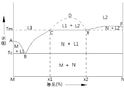

침투비파괴검사기능사 (2005-10-02 기출문제)
1과목: 침투탐상시험법(대략구분)
1. 침투처리 과정을 거쳐 세척거리 후 현상제를 사용하지 않고 열풍 건조에 의해 시험체 불연속부의 침투액이 열팽창으로 인하여 시험체 표면으로 표출되어 지시모양을 형성하는 현상 방법은?
- 건식 현상법
- 습식 현상법
- 충격시험
- 무현상법
(정답률: 59%)

2. 침투탐상검사시, 현상제를 적용한 후 관찰할 때 까지의 시간을 무엇이라 하는가?
- 유화시간
- 현상시간
- 침투시간
- 검사시간
(정답률: 92%)
3. 형광침투탐상시험에서 건식현상제를 사용할 때 형광을 내는 것은?
- 유화제
- 현상제
- 침투액
- 세척액
(정답률: 57%)
4. 수세성 침투제와 건식현상제를 사용하여 침투탐상시험을 할경우 장치의 배열이 옳은 것은?
- 전처리대 → 침투탱크 → 배액대 → 건조대 → 현상탱크 → 세척대 → 검사대
- 세척대 → 침투탱크 → 배액대 → 건조대 → 현상탱크 → 검사대 → 전처리대
- 전처리대 → 침투탱크 → 배액대 → 세척대 → 건조대 → 현상탱크 → 검사대
- 세척대 → 전처리대 → 침투탱크 → 건조대 → 배액대 → 현상탱크 → 검사대
(정답률: 64%)
5. 침투탐상시험에 적용되는 원리에 해당되지 않는 내용은?
- 침투액은 어떤 지시를 나타내기 위해 결함에 침투 해야 한다.
- 모든 결함 부분은 블랙라이트로 비추면 결함마다 고유의 빛을 발산한다.
- 조그만 결함에 대해서는 평소보다 많은 침투 시간이 필요하다.
- 결함속의 침투액이 모두 세척되면 결함에서도 지시가 나타나지 않는다.
(정답률: 70%)
6. 공기중에서 초음파의 주파수가 5MHz일 때 물속에서의 종파의 파장은? (단, 물에서의 종파속도는 1500m/s이다.)
- 0.1mm
- 0.3mm
- 0.5mm
- 0.7mm
(정답률: 75%)
7. 다음 중 침투액의 침투시간에 크게 영향을 미치지 않는 인자는?
- 예측되는 결함의 종류와 크기
- 침투액의 분량과 시험품 크기
- 시험품의 재질
- 침투액의 종류
(정답률: 56%)
8. 다음 중 “수세성 염색침투제 - 습식현상제” 사용시 필요없는 장치는?
- 현상조
- 건조기
- 유화조
- 침투액조
(정답률: 58%)
9. 침투탐상시험에서 시험조건과 현상제의 선택이 옳게 짝지워진 것은?
- 매우 매끄러운 표면은 건식현상제가 적당하다.
- 매우 거친 표면은 습식현상제가 적당하다.
- 소형의 고속작업에는 건식현상제가 적합하다.
- 균열 검출에는 속건식현상제가 이상적이다.
(정답률: 55%)
10. 다음 중 침투탐상시험시 부적절한 세척에 의하여 놓치기 쉬운 결함은?
- 단조 겹침
- 깊이 패인 결함
- 얕고 넓은 결함
- 예리한 선모양의 표면 균열
(정답률: 32%)
11. 침투탐상시험에서 염색 침투액을 사용하는 것이 형광 침투액을 사용하는 것보다 장점인 경우를 설명한 것은?(문제 오류로 4번 보기 내용이 정확하지 않습니다. 정확한 보기 내용을 아시는분 께서는 오류 신고를 통하여 보기 내용 작성 부탁 드립니다. 정답은 4번 입니다.)
- 형광침투액은 유독성인데 반하여 무독성이다.
- 형광침투액에 비해 더 예민함
- 침투성이 형광침투액보다 우수함
- 블랙라이트를 필요로 하지 않은(복원중)
(정답률: 64%)
12. 침투탐상시험에서 현상(現像)이 잘 되었을 경우에 나타나는 결함지시모양의 크기는 실제 결함크기와 비교할 때 일반적으로 어떠한가?
- 실제 결함크기와 똑 같다.
- 실제 결함크기보다 항상 작다.
- 실제 결함크기보다 일반적으로 크다.
- 실제 결함크기와는 무관하게 일정하지 않다.
(정답률: 55%)
13. 침투탐상검사로 대량의 부품검사시 침지법으로 건식 현상제를 적용할 때 다음 중 탱크에 부착되어 있어야 하는 기구로 필수적인 것은?
- 정전기 차단기
- 교반기
- 현상액 보충기
- 배기 장치
(정답률: 21%)
14. 침투탐상시험시 건식현상제에 의한 물리적 현상은 다음 중 어떤 효과를 이용한 것인가?
- 삼투압현상
- 모세관현상
- X-선 감광
- 브롬화은에서 은의 석출
(정답률: 67%)
15. 다음 중 유화제의 기능으로 올바른 설명은?
- 표면에 있는 과잉침투액과 반응하여 수세성을 용이하게 한다.
- 침투액의 침투 능력을 도와 준다.
- 얕은 개구에 있는 침투액을 빨아낸다.
- 현상제가 잘 도포될 수 있도록 도와 준다.
(정답률: 60%)
16. 다음 중 표면상태가 침투탐상검사에 유해한 영향을 미치는 요소가 아닌 경우는?
- 젖은 표면
- 거친 용접면
- 기름기있는 표면
- 다듬질한 표면
(정답률: 74%)
17. 형광침투탐상시험시 현상제를 적용하기 전에 과잉 침투제가 완전히 세척되었는가를 확인하기 위해서는 보편적으로 어떤 방법을 사용하는가?
- 자외선등으로 비추어 본다.
- 냄새를 맡아 본다.
- 손가락으로 문질러 본다.
- 확인할 필요까지는 없다.
(정답률: 100%)
18. 침투탐상시험에서 흰색의 미세한 가루를 휘발성의 유기용제에 분산시킨 현상제는?
- 건식현상제
- 습식현상제
- 속건식현상제
- 여과입자분말
(정답률: 27%)
19. 비파괴검사법 중 침투탐상시험은 어떤 목적으로 사용 되는가?
- 시험체의 기계적 특성을 측정한다.
- 시험체 표면의 불연속을 검출한다.
- 비자성 시험재의 모든 불연속을 검출한다.
- 시험체의 불연속의 길이, 넓이, 크기 등을 결정한다
(정답률: 87%)
20. 와전류탐상검사를 설명한 것으로 가장 올바른 것은?
- 표면 및 내부 결함 모두가 검출 가능하다.
- 금속, 비금속 등 거의 모든 재료에 적용 가능하고 현장 적용을 쉽게 할 수 있다.
- 비접촉으로 고속탐상이 가능하다.
- 미세한 균열의 성장유무를 감시하는데 적합하다.
(정답률: 40%)
2과목: 침투탐상관련규격(대략구분)
21. 침투탐상검사의 일종인 윙크 자이글로법에 대한 사항 중 옳은 것은?
- 후유화성 형광침투액으로만 침투처리를 해야 한다.
- 지시모양을 관찰할 경우에도 부하를 걸어 주어야 한다.
- 침투액을 적용할 경우에만 부하를 걸어 주어야 한다
- 습식 현상제를 사용해도 좋다.
(정답률: 24%)
22. 침투탐상시험시 다음 중 의사지시가 생기는 원인이 아닌 것은?
- 부적절한 세척을 했을 때
- 외부 물질에 의해 오염이 됐을 때
- 현상제에 침투액이 묻었을 때
- 방사선투과시험을 먼저 했을 때
(정답률: 87%)
23. 일반적으로 사용되는 수세성 형광 침투액에 대한 설명 중 옳지 않은 것은?
- 형광 염료가 첨가되어 있다.
- 유화제가 첨가되어 있다.
- 저점도일수록 시험기간이 길어진다.
- 수세성 염색침투액보다 검출능력이 좋다.
(정답률: 34%)
24. 침투탐상시험의 적심능(wetting ability)을 설명 할 때 접 촉각이라는 말을 쓴다. 접촉각에 대한 틀린 설명은?
- 침투액은 가능한한 접촉각이 큰 값을 갖도록 만든다
- 표면장력이 큰 수은은 접촉각이 90°이상이 된다.
- 접촉각이 90° 이상인 때에는 모세관의 내부에서 하향의 힘이 작용된다.
- 액면에 작은 관을 세웠을 때 접촉각이 클수록 관내에 올라가는 높이가 작아진다.
(정답률: 46%)
25. 후유화성 형광침투액과 습식현상제를 사용하여 침투 탐상 시험할 때 시험에 따른 탐상장치의 배열로 옳은 것은?
- 전처리대 → 침투대 → 세척대 → 유화대 → 현상대 → 건조대 → 검사대
- 전처리대 → 침투대 → 유화대 → 세척대 → 현상대 → 건조대 → 검사대
- 전처리대 → 침투대 → 유화대 → 세척대 → 건조대 → 현상대 → 검사대
- 전처리대 → 침투대 → 세척대 → 유화대 → 건조대→ 현상대→ 검사대
(정답률: 50%)
26. KS 규격에 의한 유화제 적용 방법으로 부적당한 것은?
- 분무(spraying)
- 천에 묻혀 바름(Swabbing)
- 침전(Dipping)
- 솔질(brushing)
(정답률: 45%)
27. KS B 0816에서 규정된 플라스틱의 갈라짐에 대한 침투처리 후의 표준 현상시간은? (단, 온도 15 - 50℃ 범위)
- 5분
- 7분
- 10분
- 15분
(정답률: 42%)
28. KS B 0816에 의한 다음 시험 방법 중 암실이 필요하지 않은 방법은?
- 수세성 형광침투액을 사용
- 용제제거성 형광침투액 사용
- 용제제거성 염색침투액 사용
- 후유화성 형광침투액 사용
(정답률: 70%)
29. KS B 0816에서 결함의 종류에 따른 침투시간이 가장 길게 되어 있는 결함은?
- 유리의 갈라짐
- 강주조품의 갈라짐
- 강단조품의 랩(lap)
- 강용접부의 융합불량
(정답률: 34%)
30. KS B 0888 배관용접부의 비파괴시험 방법 중 A기준에 의한 경우 침투탐상시험에 대한 합격 판정 기준이다. 옳은 것은?
- 독립침투지시모양은 독립하여 존재하는 개개의 침투 지시 모양으로 3종류로 구분한다.
- 연속침투지시모양의 길이는 침투지시모양의 개개의 길이 및 상호의 간격을 더한 값으로 한다.
- 독립침투지시모양 및 연속침투지시모양은 1개의 길이 10mm 이하를 합격으로 한다.
- 분산침투지시모양에 대해서는 연속된 용접길이 500mm당의 합계점이 10점 이하인 경우를 합격으로 한다.
(정답률: 31%)
31. KS W 0914에서 검사 기록에 대하여 최소한의 요구하고 있는 사항이 아닌 것은?
- 의뢰처 및 검사 장소
- 사용한 개개 순서서의 인용
- 결함 지시 무늬의 위치, 종류 및 조치
- 검사원의 서명 및 기량 인정 레벨과 검사일
(정답률: 45%)
32. KS W 0914에 따르면 염색침투 탐상장치(타입 Ⅱ)의 관찰 장소 백색광 조도는 얼마 만에 점검하도록 규정하고 있는가?
- 매일
- 주 1회
- 월 1회
- 년 1회
(정답률: 43%)
33. KS B 0816에서 규정된 B형 대비시험편은 몇 종류로 되어 있는가?
- 2종류
- 3종류
- 4종류
- 6종류
(정답률: 58%)
34. KS B 0816에 규정한 침투지시모양의 관찰은 현상제 적용 후 얼마의 시간 사이에 하는 것이 바람직한가?
- 시간의 제한은 없다
- 30분이내
- 7분 ~ 60분 사이
- 7분이내
(정답률: 50%)
35. KS B 0816에서 규정된 침투탐상제의 점검 내용으로 맞는 것은?
- 침투액 - 부착상태 검사
- 유화제 - 결함검출 능력검사
- 건식현상제 - 겉모양 검사
- 습식현상제 - 세척성 검사
(정답률: 53%)
36. KS B 0816에서 속건식현상제를 사용한 용제제거성 염색침투 탐상에 해당하는 시험방법의 기호는?
- FC-S
- VC-S
- VC-A
- FC-A
(정답률: 50%)
37. KS B 0816의 잉여침투액 제거방법에 따른 분류 중 틀린 것은?
- 방법 A : 휘발성 세척액을 사용하는 방법
- 방법 B : 기름베이스 유화제를 사용하는 방법
- 방법 C : 용제제거에 의한 방법
- 방법 D : 물베이스유화제를 사용하는 방법.
(정답률: 75%)
38. KS W 0914에 따른 수세성 침투액의 제거 규정으로 맞는 것은?
- 수세성 침투액은 자동 물 스프레이를 사용하여 제거하는 것을 원칙으로 한다.
- 저감도가 요구되는 시험에서는 부품을 물에 담그고 물을 교반하여 제거해도 된다.
- 물 스프레이로 세척할 때, 물의 수온은 10~52℃로 유지하여야 한다.
- 물 스프레이로 1차 세적한 후, 표면에 남아 있는 침투액은 용제 세척제로 제거한다.
(정답률: 19%)
39. KS B 0816에 규정된 침투지시 모양의 분류가 아닌 것은?
- 독립 침투지시 모양
- 연속 침투지시 모양
- 분산 침투지시 모양
- 의사지시 모양
(정답률: 89%)
40. KS B 0816에 규정된 A형 대비시험편은 가로가 75mm, 세로가 50mm인 판 및 조로 제조하는데 이때 판의 두께 범위로 올바른 것은?
- 4 ~ 6mm
- 8 ~ 10mm
- 12 ~ 14mm
- 16 ~ 18mm
(정답률: 67%)
3과목: 금속재료일반 및 용접일반(대략구분)
41. 컴퓨터가 부팅(booting)된 후에 할 수 있는 작업에 대한 설명 중 맞지 않는 것은?
- 명령 프롬프트(command prompt)에 시스템 명령을 입력할 수있다.
- 응용 프로그램을 통해 문서를 인쇄할 수 있다.
- 컴퓨터를 꺼도 다시 부팅할 필요가 없다.
- 프로그램을 실행할 수 있다.
(정답률: 48%)
42. 인터넷 도메인 이름의 부여 원칙 중 기관분류 구분이 서로 틀리게 짝지어진 것은?
- go - gov
- co - com
- ac -edu
- re - net
(정답률: 32%)
43. Windows에서 파일 삭제 시 휴지통에 버리지 않고 바로 삭제 하려면?
- Delete 키를 누른다.
- Alt 키를 누른 상태에서 Del 키를 누른다.
- Ctrl 키를 누른 상태에서 Del 키를 누른다.
- Shift 키를 누른 상태에서 Del 키를 누른다.
(정답률: 31%)
44. 인터넷 상에서 전화를 걸 수 있는 기술을 무엇이라고 하는가?
- VolP
- VOD
- AOD
- ADSL
(정답률: 20%)
45. 컴퓨터를 사용할 때 일반적으로 올바른 작업 자세가 아닌것은?
- 손등은 팔과 수평이 되도록 유지한다.
- 무릎의 각도는 90도 이상을 유지하도록 한다.
- 키보드의 위치는 심장보다 높게 위치해야 한다.
- 화면보다 눈높이가 조금 높아 화면을 약간 아래로 보는 것이 좋다.
(정답률: 67%)
46. 공석강의 탄소함유량은 약 얼마인가?
- 0.15%
- 0.8%
- 2.0%
- 4.3%
(정답률: 65%)
47. 금속재료의 화학적 성질을 설명한 것 중 틀린 것은?
- 수소보다 이온화 경향이 적은 금속은 산에 작용하기 힘들다.
- 금속은 산과 작용해서 염을 만들고 염은 수용액 중에서 전리하여 양이온이 된다.
- 이온화 경향이 큰 것은 화합물이 생기기 어렵고 화합물은 안정하다.
- 금속의 산화는 온도가 높을수록, 산소가 금속 내부로 확산 하는 속도가 클수록 빨리 진행된다.
(정답률: 52%)
48. 우라늄과 토륨 무엇으로 사용하는가?
- 강의 탈산제
- 구리 합금
- 도장 재료
- 원자로용 1차금속
(정답률: 76%)
49. 담금질의 주 목적을 설명한 것은?
- 강을 Ac3-Ac1점 이하의 저온에서 서냉시키고 A1변태를 중지시켜 인성을 저하시킨다.
- 강을 Ac3-Ac1점 이상을 고온에서 서냉시키고 A1변태를 중지시켜 경도를 저하시킨다.
- 강을 Ac3-Ac1점 이하의 저온에서 급냉시키고 A1변태를 중지시켜 인성을 증가시킨다.
- 강을 Ac3-Ac1점 이상을 고온에서 급냉시키고 A1변태를 중지시켜 경도를 증가시킨다.
(정답률: 47%)
50. 철강에서 철 이외의 5대 원소는?
- 질소, 황, 인, 망간, 크롬
- 수소, 황, 인, 구리, 규소
- 탄소, 규소, 망간, 인, 황
- 수은, 규소, 니켈, 황, 인
(정답률: 66%)
51. 샤르피 충격시험으로부터 알 수 있는 연성-취성, 천이현상에 대한 설명으로 맞는 것은?
- 체심입방정(BCC) 금속에서 잘 나타나지 않고, 면심입방정(FCC) 금속에서 잘 나타난다.
- 흡수에너지나 파면을 관찰하여 알 수 있다.
- 천이온도보다 낮은 온도에서 연성파괴가 일어난다
- 결정립이 미세할수록 천이온도가 높아진다.
(정답률: 25%)
52. 모넬메탈, 양백 등의 납땜에 가장 많이 사용되는 것은?
- 금납
- 은납
- 황동납
- 철납
(정답률: 17%)
53. 강도와 경도가 큰 순서로 맞게 짝지어진 것은?
- 마텐자이트 ＞ 트루스타이트 ＞ 소르바이트 ＞ 펄라이트＞ 오스테나이트
- 마텐자이트 ＞ 소르바이트 ＞ 트루스타이트 ＞ 오스테나이트 ＞ 펄라이트
- 마텐자이트 ＞ 트루스타이트 ＞ 오스테나이트 ＞ 펄라이트＞ 소르바이트
- 마텐자이트 ＞ 소르바이트 ＞ 펄라이트 ＞ 트루스타이트＞ 오스테나이트
(정답률: 19%)
54. 그림의 상태도에서 E점에서의 반응점은?

- 공정점
- 포석점
- 편정점
- 편석점
(정답률: 20%)
55. 6.67%의 C(탄소)를 포함 되었을때 C와 Fe의 화합물은?
- 시멘타이트
- 페라이트
- 오스테나이트
- 마텐자이트
(정답률: 65%)
56. 단면적이 2cm2의 철구조물이 5,000Kgf의 하중에서 균열이 발생 될 때의 압축응력(Kgf/cm2)은?
- 1,000 Kgf/cm2
- 2,500 Kgf/cm2
- 3,500 Kgf/cm2
- 4,000 Kgf/cm2
(정답률: 75%)
57. 정육각기둥의 꼭지점과 위, 아래 면의 중심 그리고 정육각 기둥의 형상을 하고 있는 6개의 정삼각기둥 중 1개 또는 삼각기둥의 중심에 1개씩의 원자가 있는 것은?
- 체심입방격자
- 면심입방격자
- 조밀육방격자
- 저심면방격자
(정답률: 53%)
58. 비금속 개재물이 원인이며 모서리, T 이음 등에서 볼 수 있는 것으로 강의 내부에 모재 표면과 평행하게 층상으로 발생하는 균열은?
- 라미네이션
- 델라이네이션
- 라멜라테어
- 재열균열
(정답률: 15%)
59. 다음 중 일반적인 가스용접 작업에 가장 적합한 범위인 차광유리(Filter Glass)의 차광도 규격 번호인 것은?
- 2 ~ 3
- 4 ~ 7
- 7 ~ 9
- 9 ~ 12
(정답률: 34%)
60. 저수소계 용접봉의 건조온도 및 시간으로 다음 중 가장 적당한 것은?
- 70 ~ 100[℃]로 1시간 정도
- 70 ~ 100[℃]로 2시간 정도
- 300 ~ 350[℃]로 1시간 정도
- 300 ~350[℃]로 2시간 정도
(정답률: 10%)